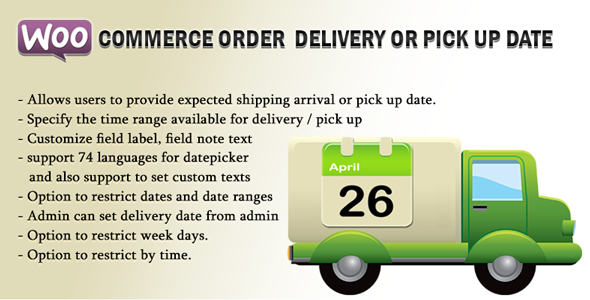
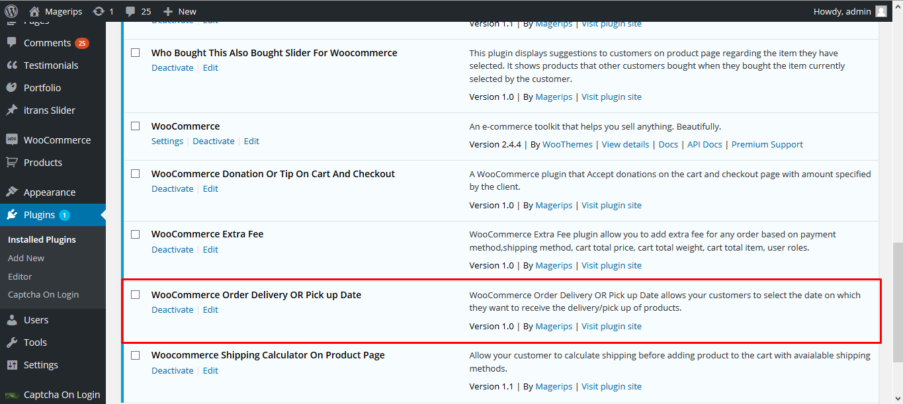
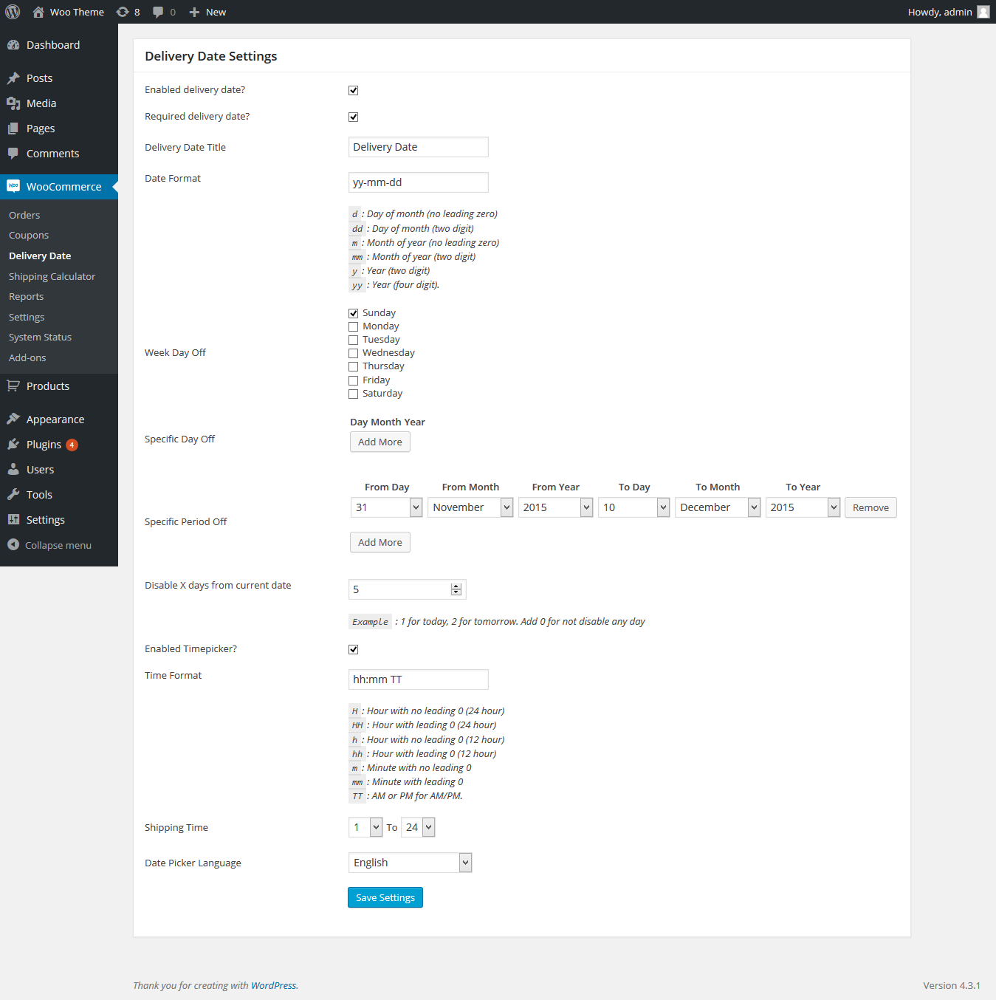

WooCommerce Order Delivery Or Pick Up Date
WooCommerce Order Delivery Or Pick Up Date allows your customers to select the date on which they want to receive the delivery/pick up of products. Using this, customer can provide the expected shipping arrival date and time or pick up date and time for their orders
By: Magerips Team
Version: V1.0
Thanks for purchasing WooCommerce Order Delivery Or Pick Up Date plugin from codecanyon.
If you have any questions that are beyond the scope of this help file, please feel free to email me via my user page contact form Here at CodeCanyon. Thank you so much!

Installation
Before Installing WooCommerce Order Delivery Or Pick Up Date plugin, Please make sure WooCommerce plugin is active
2.Installation
- Unzip plugin file(rp-woo-deliverydate.zip).
- Upload the the plugin folder (not just the files in it!) to your "wp-content/plugins" folder. If you're using FTP, use 'binary' mode.
- Activate the plugin in your plugins administration panel.

How to Use
After the sucessfull installation, goto "WooCommerce -> Delivery Date ", From the wordpress Dashboard

Features
- Allows users to provide expected shipping arrival or pick up date.
- Specify the time range available for delivery / pick up
- Customize field label text
- Support 74 languages for datepicker and also support to set custom texts
- Option to restrict dates and date ranges
- Admin can set delivery date from admin
- Option to restrict week days.
- Option to restrict by time.
- Customize delivery data display according to your needs
- Easy admin, no coding required